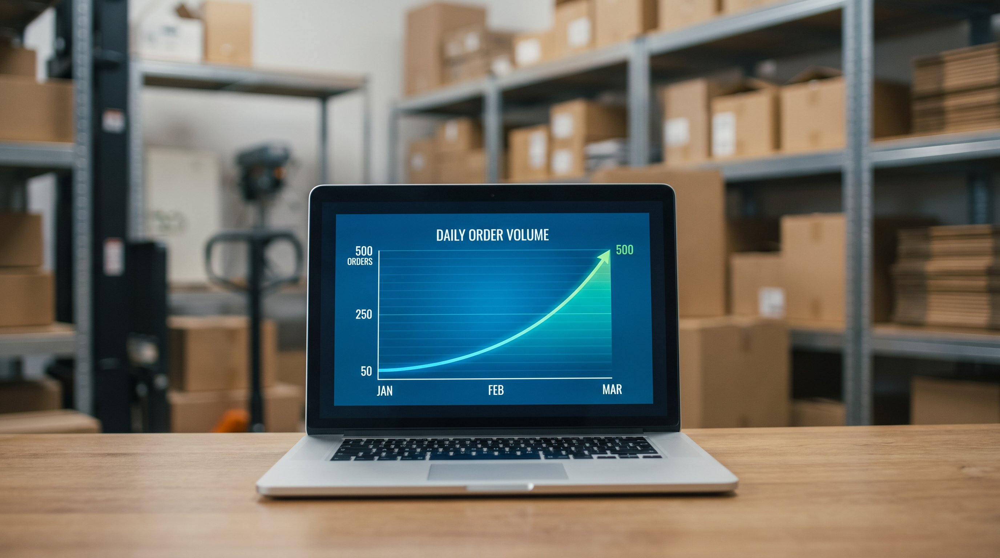

At gå fra 50 til 500 ordrer om dagen er ikke bare ti gange mere af det samme. Det er en strukturel transformation af, hvordan dit lager fungerer. De processer, systemer og færdigheder der bar dig fra 0 til 50 ordrer, er ikke dem der baejer dig fra 50 til 500.
De fleste virksomheder opdager dette den haarde vej. De vokser sig ud af det, de kendte, men fortsætter med at bruge de gamle værktøjer, de gamle rutiner og den gamle organsiation. Resultatet er stigende fejlrate, forsiinkede forsendelser og medarbejdere der arbejder haardere end noevendigt uden at producere tilsvarende mere.
Her er hvad der faktisk ændrer sig ved hvert trin, og hvad du skal have på plads for at vokse videre.
👉 SmartPack er bygget til at vokse med dig fra 50 til 500 og videre. Se systemet i en demo
Fra 0 til 50 ordrer: det du allerede ved
På dette trin klarer de fleste sig med Excel, en notesbog eller ingenting. Ejeren pakker selv, kender alle ordrer og alle varer. Systemerne er minimale, men det virker, fordi kompleksiteten er lav.
Det der knirker: lagerstatus er usikker, backorders opdages for sent, og der er ingen systematisk maade at håndtere fejl og returvarer på. Det er acceptabelt ved lav volumen, men det er ikke skalerbart.
Fra 50 til 150 ordrer: systemer er ikke valgfrie mere
Her er brudpunktet for de fleste. Pludselig er der for mange ordrer til at holde styr på i hoevet, og fejlraten begynder at stige. Det er her, et WMS-system slutter at være en luksus og begynder at være noevendigt.
Hvad der ændrer sig:
- Behov for stregkodescanning: Manuel produktidentifikation ved pluk fejler for hyppigt ved 100+ ordrer. Scanning reducerer fejlraten dramatisk.
- Lagerstruktur: Varer skal være på faste lokationer med lokationskoder. "Det ligger et sted på den midterste reoal" fungerer ikke med 100 daglige ordrer.
- Labelprinter er essential: Haandskrevne eller A4-printede labels er for langsomme og fejlbejagte.
- Første medarbejder utover ejer: På dette tidspunkt kan en person ikke laengere haendtere alt alene. Den første dedikerede lagermedarbejder er typisk nødvendig ved 60-80 ordrer om dagen.
Fra 150 til 300 ordrer: opsætning og koordinering
Her er du med to eller tre medarbejdere og begynder at have brug for koordinering. Hvem plukker hvad? Hvem paakker? Hvem modtager leverancer?
Hvad der ændrer sig:
- Batch-pluk og zone-pluk: I stedet for at plukke order for order, er det effektivere at plukke mange ordrer på samme gangroute. Det kræver WMS-funktionalitet.
- Lager-layout optimering: De 20% mest plukede varer skal være nærmest pakkebordet. En analyse af dine plukdata viser, hvad der skal flyttes.
- Dedicated receiving area: Modtagelse af varer maa ikke foregå på pakkebordet. Separat modtagelsesomraade med eget flow reducerer forstyrringer i pakkeoperationen.
- Indkøbsplanlaegning med data: Excel-baseret bestillingsadministration holder ikke. Du behøver systemdata til at vide, hvornår du skal geninvestre på hvilke varer.
Fra 300 til 500 ordrer: professionalisering
På dette niveau er du et professionelt lager. De pracesser og systemer, der er på plads, afgør om du kan naa 500 ordrer med samme team eller kræver du dobbelt saa mange folk.
Hvad der ændrer sig:
- Lageransvarlig: Du behøver en person der er ansvarlig for daglig drift, personalekroordinering og systemvedligehold. Det er ikke ejeren mere, det er en dedikeret rolle.
- KPI-opfoelgning: Pakketid per ordre, fejlrate, pluk-per-time. Disse tal bør tjekktes daglig, ikke maanedlig. Du kan ikke styre det du ikke maaler.
- Skalerbar WMS-infrastruktur: Systemet skal kunne håndtere mange samtidige brugere, multi-user pluk og avancerede rapporter. Et simpelt bestillingsystem er ikke nok laengere.
- Standardiserede processer: Skriftlige procedurer for modtagelse, pluk, pakning og forsendelse. Saa den syvende medarbejder på en travl dag gør det på samme maade som den første.
Den oversete faktor: ledelse skalerer ikke automatisk
Mange virksomheder investerer i systemer og personale, men glemmer at ledelsesstrukturen også skal skaleres. En ejer-leder kan direkte styre 3-4 medarbejdere. Ud over det skal der være mellemniveauer, klare ansvarsomraader og processer for eskalering.
Lagerchefer der går fra 50 til 500 ordrer uden at ændre ledelsesstrukturen, ender med at være flaskehalsen selv. Alle spoerger dem om alting, og de kan ikke fokusere på vaekst. Det er en af de største vaekstbarrierer vi ser hos lager-virksomheder i Danmark.